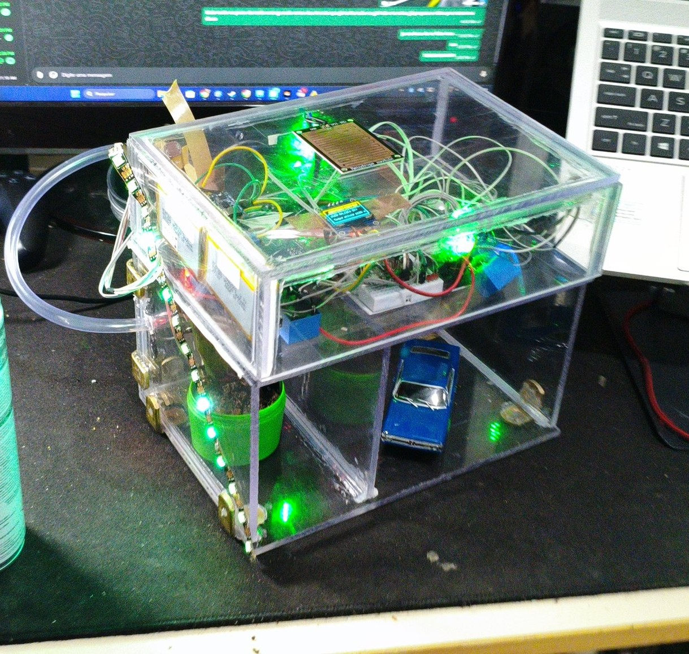

Dados ao vivo da maquete
Esta página lê, direto do banco de dados, o que a maquete física está medindo agora e o histórico das últimas 24 horas.
Situação agora
Reservatório (garrafa)
--
nível de água
Subsolo (estacionamento)
--
nível de água
Temperatura
--
sensor DHT11
Status
--
Chuva: -- · Solo: --
última leitura: --
Clique para buscar os dados mais recentes.
Histórico das últimas 24 horas
Total de registros no período: --. A tabela atualiza sozinha a cada 20 segundos e também pelo botão acima.
| Quando | Status | Garrafa (cm) | Subsolo (cm) | Temp. (°C) | Chuva | Bomba dreno | Bomba captação |
|---|---|---|---|---|---|---|---|
| Carregando… | |||||||
Nossa prototipação de hardware
A maquete é um prédio de dois andares em acrílico: o subsolo (estacionamento, com um carro) embaixo e o reservatório em cima. Toda a decisão acontece na própria placa, sem depender da internet.
Peças principais:
- Arduino Uno R4 WiFi — placa final, envia as leituras à nuvem;
- Uno R3 — placa de desenvolvimento e testes;
- 2× HC-SR04 — nível de água do subsolo e do reservatório;
- DHT11, sensor de chuva e sensor capacitivo de solo — ambiente;
- RTC DS3231 — data e hora de cada leitura;
- Display OLED — painel local da situação;
- 2 relés + mini-bombas (dreno e captação), com um transistor BC547 reforçando o acionamento;
- Fita NeoPixel — rota de fuga: verde (livre), azul (atenção), vermelho (perigo);
- Supabase — banco de dados que esta página consulta.

Manual de uso
- Ligue a placa na energia. O sistema inicia sozinho e funciona mesmo sem internet.
- O display OLED mostra o nível do reservatório, do subsolo, a temperatura e a situação (NORMAL, ALERTA ou CRÍTICO).
- A fita de LED aponta a saída: verde é caminho livre, azul é atenção e vermelho é perigo.
- O botão de toque troca a trava das bombas (5, 10 ou 20 s). Segure por 2 s para ligar o modo manual de teste das bombas na apresentação.
- Com Wi-Fi, cada leitura vai para o banco. Abra esta página e clique em “Sincronizar com o banco” para ver os dados e o histórico de qualquer lugar.